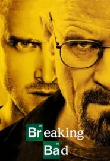
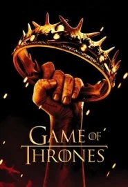
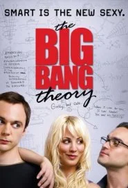
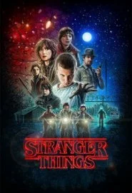
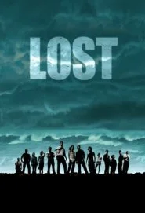

più popolari: TOP 5

Carmela Bianca
Carmela Bianca
Da qualche anno a questa parte, le serie tv sono diventate un argomento di discussione e confronto, come mai era capitato prima. La capillare diffusione di Netflix e la continua concorrenza fra piattaforme di contenuti streaming on demand ha alzato progressivamente l’asticella della qualità dei prodotti seriali televisivi e, soprattutto, la loro quantità. L’offerta di serie tv è aumentata notevolmente e farsi largo fra i numerosi titoli disponibili si fa sempre più difficile. Quali sono, allora, le serie tv più popolari? Parliamo di quei telefilm che hanno visto proprio tutti, quelle di cui tutti parlano e da cui non si può davvero prescindere, se si intende definirsi esperti sull’argomento. La classifica di Nientepopcorn.it dedicata alle serie tv più viste dagli utenti è in continuo aggiornamento e può aiutarvi a fare ordine in mezzo all’esorbitante quantità di titoli in circolazione.
Dopo aver saputo di avere un cancro terminale ai polmoni, il mite Walter White, professore di chimica al liceo, con l'aiuto di Jesse Pinkman, suo ex-studente, decide di iniziare a produrre e spacciare cristalli di metanfetamina: con i proventi derivanti dal losco traffico, intende salvaguardare la sua famiglia, in modo che sua moglie Skye, suo figlio Walter Jr., disabile, e la figlia in arrivo possano avere sufficienti mezzi di sussistenza anche dopo la sua morte.
Nell'immaginario mondo di Westeros, in un tempo dal sapore medievale, s'intrecciano le vicende di alcune casate che lottano per la supremazia: i Baratheon, i Lannister, gli Stark, i Targaryen sono solo alcune delle famiglie che, tra guerre manifeste e intrighi clandestini, in un interminabile rovescio di fortune e alleanze, cercano di trionfare sugli avversari e prendere possesso del Trono di Spade, simbolo del potere e del comando. Tratto dal ciclo di romanzi Cronache del ghiaccio e del fuoco di George R. R. Martin.
La vita di due giovani scienziati del CalTech, Leonard e Sheldon (rispettivamente un fisico sperimentale e un fisico teorico), viene stravolta quando Penny, una avvenente e frivola giovane del Nebraska, cameriera alla Cheesecake Factory, si stabilisce come inquilina nell'appartamento di fronte al loro. Due mondi così diversi, quello dei super-nerd e quello patinato di chi legge Vogue e sogna una carriera nel cinema, saranno così costretti a scendere quotidianamente a compromessi...
Hawkins, Indiana, 1983. Will scompare nel nulla dopo aver trascorso quasi tutto il giorno con i suoi amici. La madre e il fratello non sanno darsi pace, l'intera comunità si mette sulle sue tracce. Anche i suoi compagni di gioco, disobbedendo ai propri genitori, tentano di ritrovarlo e si imbattono in una misteriosa ragazzina che, stando ad un tatuaggio sul braccio, dice di chiamarsi Eleven e che sembra essere dotata di inquietanti poteri.
Un aereo partito da Sydney e diretto a Los Angeles precipita su un'isola dell'Oceano Pacifico. Quarantotto persone riescono a sopravvivere miracolosamente al terribile incidente. Mentre attendono speranzosi l'arrivo dei soccorsi, i superstiti del disastro iniziano a conoscersi e a collaborare insieme, ma intanto il tempo passa e nessuno giunge sull'isola per salvarli. Dovranno quindi cavarsela da soli.
